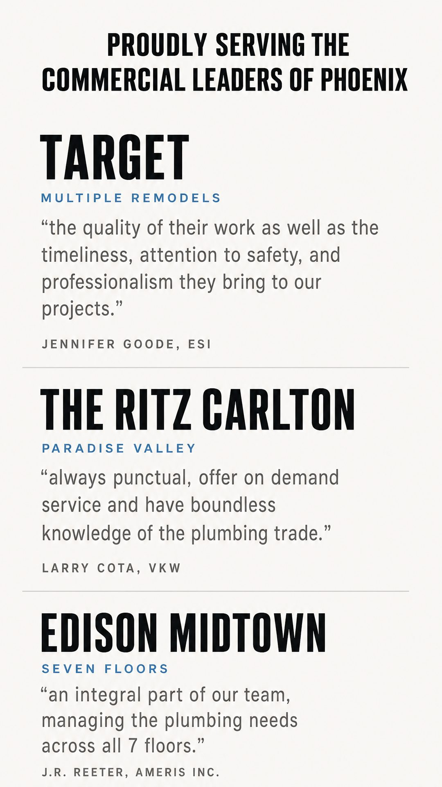
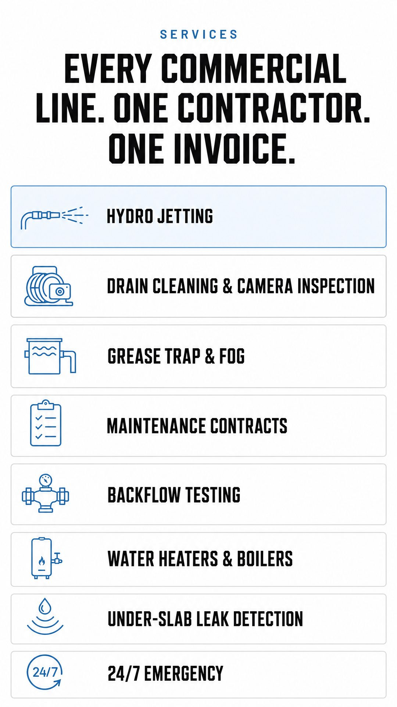
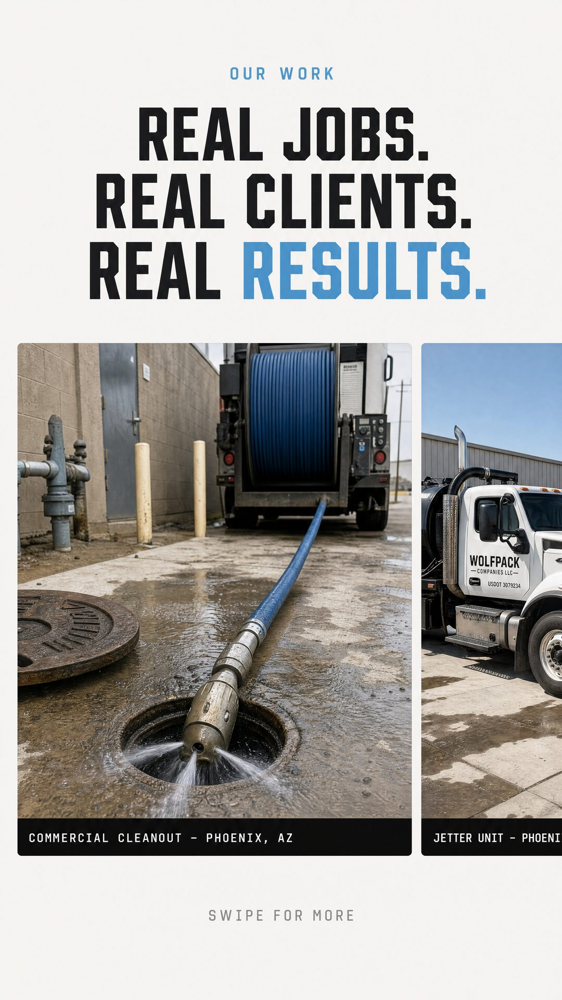
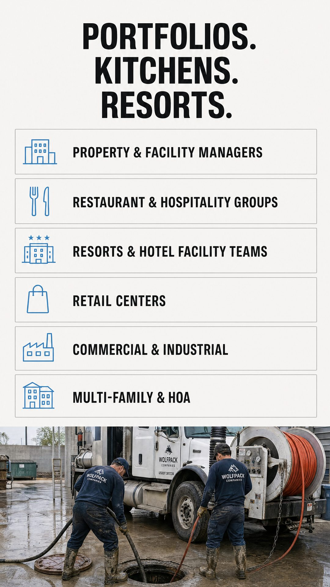
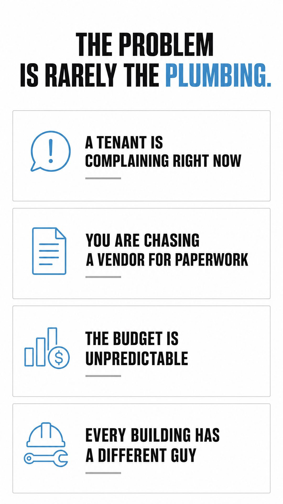
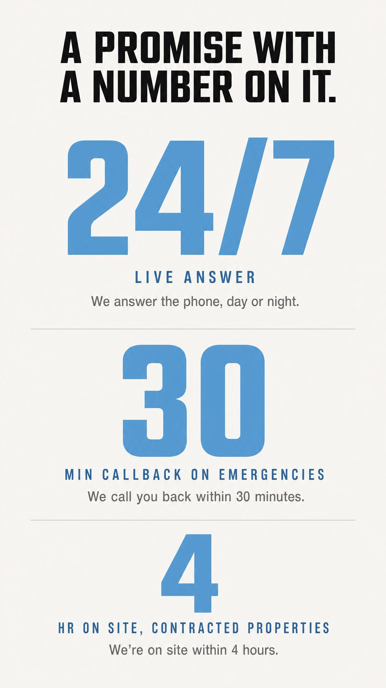
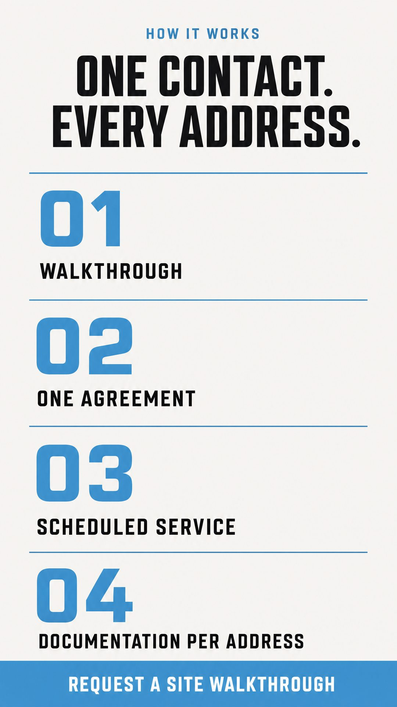

What changed. The phone number is a full-width call bar instead of being hidden. Services and audiences are full-width rows you scan, not tall centred boxes. The work photos are a swipe rail. The footer rows are tappable.
The photography is generated and the generator painted a made-up Wolfpack logo onto the truck and the crew shirts. Placeholder only. Thursday's shoot replaces every photo.



The test this page passed. Its copy was written in desktop shapes — a 2x2 grid, three figures side by side, a six-row table, four steps in a row. All four came back as proper phone patterns.
The response numbers are ours, not Wolfpack's. The 30-minute callback and 4-hour on-site figures have never been confirmed by Ross. They now read as a written service guarantee on the page whose job is surviving vendor vetting. This page cannot go live to customers until he commits to those numbers, or we replace them.